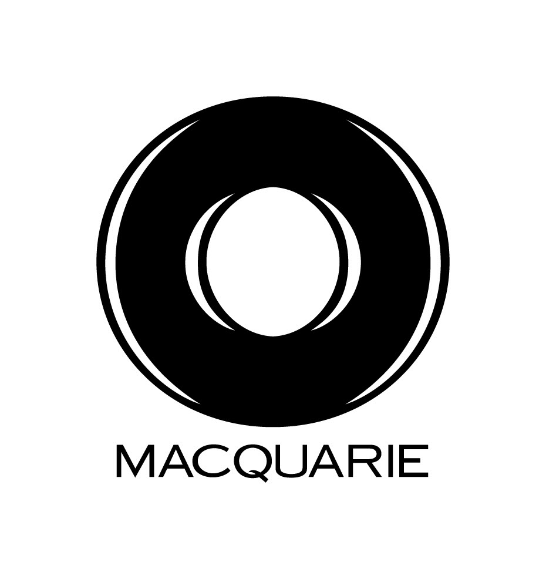

Experience
This summer, I will be joining Morgan Stanley as a Quantitative Risk Management intern in the NYC office.
In Summer 2024, I worked at BNP Paribas as a Global Markets Sales and Trading Intern. I rotated on the Equity Derivatives Index Flow Trading and Structured Credit desks. For my main project, I developed a tool using VBA and Excel that extracts Bloomberg data and compares bond and credit default swap spreads to identify opportunities to trade basis and credit-linked notes. I also researched and presented pitches on an options calendar strangle and a bond-CDS basis trade.

In Summer 2023, I worked at Macquarie as a Public Investments Intern in the Fixed Income – Derivatives Group. My intern project involved revamping a trade blotter to improve organization, tracking, and statistical analysis capabilities. Additionally, I created visualizations for quarterly reports using Excel and VBA. I gained exposure to investment strategies across equities and fixed income, over-the-counter derivative trading, and various derivative structures and market indices.
I have been a member of Cornell Data Science Project Team on the Quantitative Finance Subteam for four years. We collaborate on projects that use a data-driven and statistical approach to develop trading strategies. I was Finance and Corporate Chair for 3 semesters. In this role, I implemented a $20,000 budget for our 70+ member team and maintained relationships with corporate sponsors.